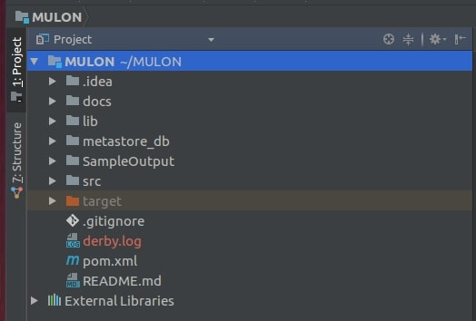

MULON - MULtilingual Ontology mergiNg
Overview
MULON is an open-source software framework, for merging monolingual ontologies in different natural languages
producing a multilingual ontology. Merging means creating a single ontology to provide a unified view of the input
ontologies by maintaining all information contained in them.
Architecture
The following figure shows MULON’s software architecture:

The input to MULAN is the two ontologies in two different natural languages. The output is a multilingual in addition to an assessment sheet presenting the quality of the merged ontology.
MULON has three modules:
- Preparation Module
- Merging Module
- Cross-lingual matching
- Ontology production
- Assessment Module
Source code
The latest code can be installed from the GitHub.
Documentation
A description for each configurable parameter and function can be found here.
Installation
All implementations are based on Scala 2.11.11 and Apache Spark 2.3.1.. After installing them,
download MULON using:
git clone https://github.com/shmkhaled/MULON.git
cd
MULON
mvn clean package
After you are done with the configurations mentioned above, you will be able to open the project. The following
figure shows MULON
in intelliJ

Example
Read two ontologies in turtle into NTRIPLES format and generate RDD representation of it. We use SANSA readers to build a dataset of RDD[graph.Triple] for input
ontologies. SANSA support different RDF serialization formats (e.g. NTRIPLES/N3, XML/RDF, TURTLE, QUAD).
val lang = Lang.NTRIPLES
val O1triples = spark.rdf(lang)(O1)
val O2triples = spark.rdf(lang)(O2)
val multilingualMergedOntology = ontoMerge.MergeOntologies(O1triples, O2triples)
val ontStat = new OntologyStatistics(sparkSession1)
println("Statistics for merged ontology")
ontStat.GetStatistics(multilingualMergedOntology)
//Assessemnt sheet
val quality = new QualityAssessment(sparkSession1)
println("Relationship richness for O1 is " + quality.RelationshipRichness(O1triples))
println("Relationship richness for O2 is " + quality.RelationshipRichness(O2triples))
println("Relationship richness for Om is " + quality.RelationshipRichness(multilingualMergedOntology))
println("==============================================")
println("Attribute richness for O1 is " + quality.AttributeRichness(O1triples))
println("Attribute richness for O2 is " + quality.AttributeRichness(O2triples))
println("Attribute richness for Om is " + quality.AttributeRichness(multilingualMergedOntology))
println("==============================================")
println("Inheritance richness for O1 is " + quality.InheritanceRichness(O1triples))
println("Inheritance richness for O2 is " + quality.InheritanceRichness(O2triples))
println("Inheritance richness for Om is " + quality.InheritanceRichness(multilingualMergedOntology))
println("==============================================")
println("Readability for O1 is " + quality.Readability(O1triples))
println("Readability for O2 is " + quality.Readability(O2triples))
println("Readability for Om is " + quality.Readability(multilingualMergedOntology))
println("==============================================")
println("Isolated Elements for O1 is " + quality.IsolatedElements(O1triples))
println("Isolated Elements for O2 is " + quality.IsolatedElements(O2triples))
println("Isolated Elements for Om is " + quality.IsolatedElements(multilingualMergedOntology))
println("==============================================")
println("Missing Domain Or Range for O1 is " + quality.MissingDomainOrRange(O1triples))
println("Missing Domain Or Range for O2 is " + quality.MissingDomainOrRange(O2triples))
println("Missing Domain Or Range for Om is " + quality.MissingDomainOrRange(multilingualMergedOntology))
println("==============================================")
println("Redundancy in O1 is " + quality.Redundancy(O1triples))
println("Redundancy in O2 is " + quality.Redundancy(O2triples))
println("Redundancy in Om is " + quality.Redundancy(multilingualMergedOntology))
println("==============================================")
println("Class coverage for Om is " + quality.ClassCoverage(O1triples, O2triples, multilingualMergedOntology, ontoMerge.numberOfMatchedClasses))
println("Property coverage for Om is " + quality.PropertyCoverage(O1triples, O2triples, multilingualMergedOntology, ontoMerge.numberOfMatchedRelations))
println("Compactness for Om is " + quality.Compactness(O1triples, O2triples, multilingualMergedOntology))